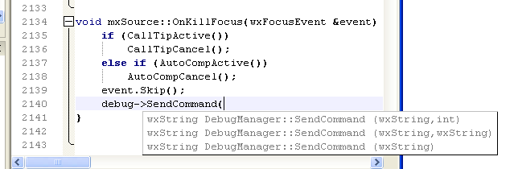

Ayuda Para Llamadas a Funciones/Metodos
Esta característica le ayuda a completar los parámetros de una función, método o macro mostrando automáticamente un globo con las posibles opciones cada vez que debe escribir un parámetro (cuando se abre un paréntesis o cuando se coloca una coma). También puede invocarse manualmente presionando Ctrl+Espacio habiendo ubicado el cursor luego de un paréntesis o coma, en una llamada a método o función.

La forma en que se determina que elemntos mostrar es la misma que se utiliza para el Autocompletado, por lo también requiere que el Arbol de Simbolos esté correctamente actualizado y puede agregar además información de diccionarios estándar. Para activar o desactivar esta características, o para elegir que diccionarios estándar utilzar debe referirse a la pestaña Asistencias del diálogo de Preferencias.